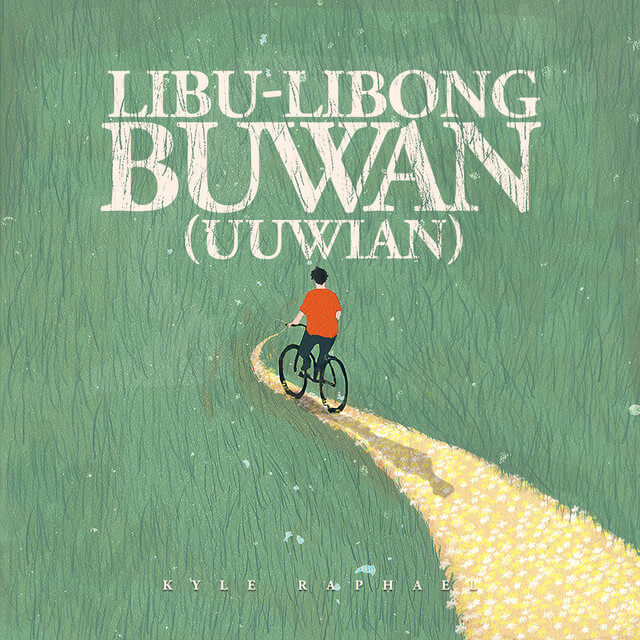
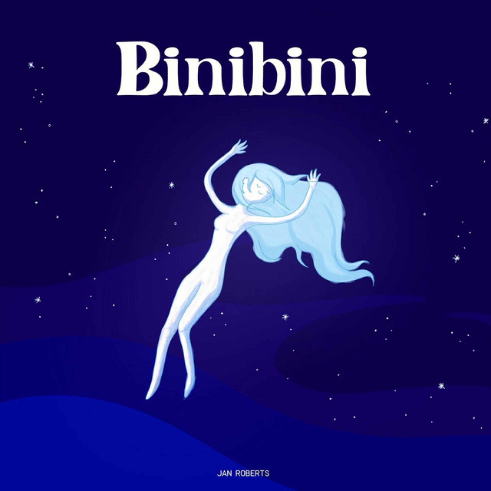

Kalapastangan | fitterkarma
Need you now | Lady Antebellum

Libu-libong Buwan | Kyle Raphael

Binibini | Zack Tabudlo
Pahintulot | Shirebound&Busking
Songs that always bring you to my mind first.
"Kalapastangan ang 'di ka ibigin. Kalokohan ang 'di ka isipin."